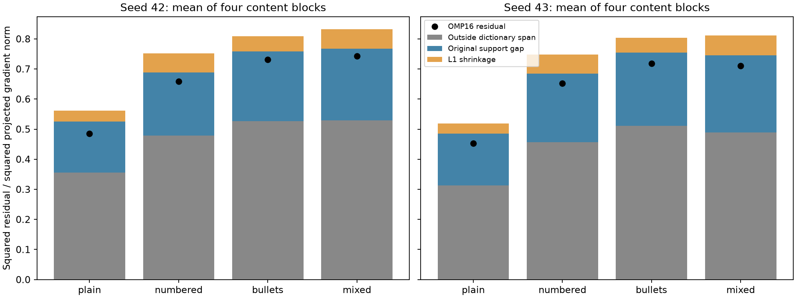
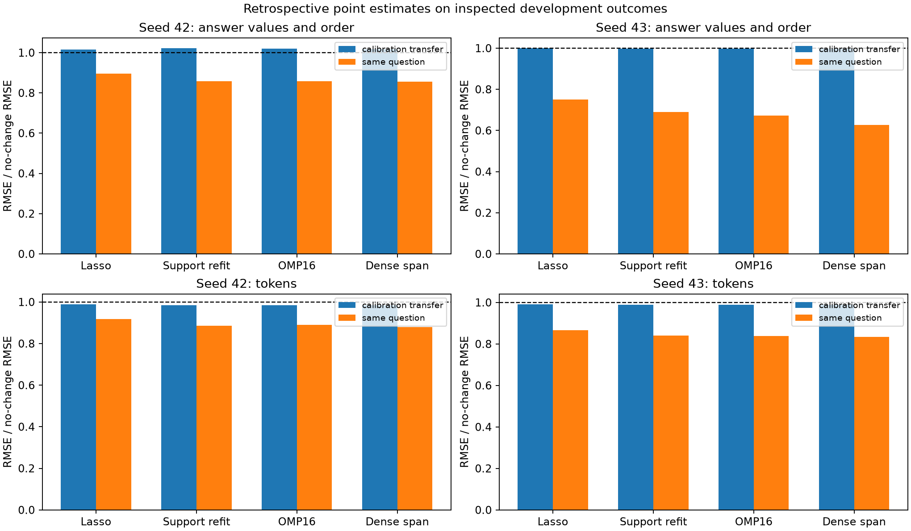

This retrospective development diagnostic keeps the existing 500-atom dictionaries and all 16 batch gradients per seed fixed. It separates L1 coefficient shrinkage, sparse support selection and the residual outside the dictionary span. No new model updates or responses were generated. The protocol and tested implementation were frozen before computing new codings.
The original dictionary was learned on normalized EKFAC projections. Every coding here restores the original projected norm. Least-squares support refit uses exactly the original Lasso support; OMP selects at most 16 atoms; dense least squares is a span reference. The dense result is not a small interpretable explanation. Better reconstruction does not validate descriptions or causal selectivity. These errors are in projected coordinates, not physical parameter space.
Removing L1 shrinkage recovers about5.39/5.30 percentage points of squared projected gradient energy. The original residual is73.87/72.04%;21.24/22.50points are the gap from the original support to the complete dictionary span, and47.25/44.24points remain outside that span. Shrinkage therefore accounts for only7.29/7.36%of original reconstruction SSE. Refitting raises mean reconstructed norm ratio from.353/.376 to.552/.565, but mean relative residual only changes.856/.844 to.824/.812. Dense use of all500atoms still leaves mean relative residual.683/.660. This is projected-space geometry, not physical parameter norm or semantic validation.
Original Lasso supports were unchanged under all640small perturbations. The support-refit support is fixed by construction. OMP16 on seed42batch14 changes support on3of20perturbations: a0.01%input perturbation can change coefficients43.55%and reconstructed projected direction27.46%, minimum support Jaccard.6842. Allother OMP perturbations kept support. Independent sklearn orthogonal_mp verifies the original and all3changed outcomes. This is a local sensitivity diagnostic, not population uncertainty.
Retrospective same-question content/order nRMSE improves from.896/.750 to.857/.690 under support refit, .859/.672 under OMP16 and.857/.628 with dense span. Calibration-transfer content/order remains near no change:1.021/.999 for support refit,1.020/.998 forOMP16,1.019/.997 dense. Calibration-transfer length fromrefit is+.078/+.026tokens versusactual+3.621/+1.744, andtruncationstillpredictszero. Allprobability violations andendpoint/style/tasktails retained. These are posthoc recombinations of already inspected development outcomes, no newprospectiveforecast orsignificance claim.
Coefficient shrinkage is real but is a minority of the projected reconstruction error. Changing sparse coding alone does not fix the failed transfer or validate the named atoms. OMP adds a sensitivity failure. Do not promote the secondary retrospective improvements to a positive interpretability result.
Interpretation and next development rationale

| seed | method | mean_relative_residual | mean_norm_ratio | mean_atoms | numbered_included | bullets_included | maximum_coefficient_amplification | minimum_support_jaccard | undefined_coefficient_changes |
|---|---|---|---|---|---|---|---|---|---|
| 42 | original_lasso | 0.8557 | 0.3529 | 14.06 | 2 | 1 | 1.028 | 1 | 0 |
| 42 | support_refit | 0.824 | 0.5523 | 14.06 | 2 | 1 | 0.3762 | 1 | 0 |
| 42 | omp16 | 0.8047 | 0.5792 | 16 | 2 | 1 | 4356 | 0.6842 | 0 |
| 42 | dense_span | 0.6832 | 0.7234 | 500 | 16 | 16 | 0.7282 | 1 | 0 |
| 43 | original_lasso | 0.8442 | 0.3761 | 12.62 | 5 | 0 | 0.739 | 1 | 0 |
| 43 | support_refit | 0.8124 | 0.5649 | 12.62 | 5 | 0 | 0.294 | 1 | 0 |
| 43 | omp16 | 0.791 | 0.5967 | 16 | 7 | 0 | 0.2049 | 1 | 0 |
| 43 | dense_span | 0.6604 | 0.7438 | 500 | 16 | 16 | 0.7049 | 1 | 0 |
These new codings were applied to already inspected outcomes and already locked atom profiles. They are retrospective point estimates, with no new uncertainty or significance claim. Calibration transfer and same-question profiles are both retained. Missing events still produce zero profile effects. No forecast is clipped; probability-range violations are reported. Four content blocks, four task families and two reused adapters do not support broad population claims.

| seed | scope | method | endpoint | nrmse | rmse | predicted_mean | actual_mean | outside_probability_fraction |
|---|---|---|---|---|---|---|---|---|
| 42 | calibration_transfer | original_lasso | numbered | 0.9944 | 0.02383 | 0.0003052 | 0.01221 | 0 |
| 42 | calibration_transfer | original_lasso | bullets | 1 | 0.1054 | 0 | 0.0354 | 0 |
| 42 | calibration_transfer | original_lasso | answer_values_and_order | 1.015 | 0.09887 | 0.007425 | -0.01221 | 0.1562 |
| 42 | calibration_transfer | original_lasso | tokens | 0.9885 | 6.024 | 0.05418 | 3.621 | undefined |
| 42 | calibration_transfer | original_lasso | truncated | 1 | 0.03577 | 0 | 0.01587 | 0 |
| 42 | calibration_transfer | original_lasso | words | 0.9968 | 2.18 | 0.005816 | 1.309 | undefined |
| 42 | calibration_transfer | original_lasso | empty | undefined | 0 | 0 | 0 | 0 |
| 42 | calibration_transfer | original_lasso | possible_degeneration | 1 | 0.01906 | 0 | 0.007751 | 0 |
| 42 | calibration_transfer | support_refit | numbered | 0.9907 | 0.02374 | 0.0004705 | 0.01221 | 0 |
| 42 | calibration_transfer | support_refit | bullets | 1 | 0.1054 | 0 | 0.0354 | 0 |
| 42 | calibration_transfer | support_refit | answer_values_and_order | 1.021 | 0.09945 | 0.01039 | -0.01221 | 0.1758 |
| 42 | calibration_transfer | support_refit | tokens | 0.9843 | 5.999 | 0.07773 | 3.621 | undefined |
| 42 | calibration_transfer | support_refit | truncated | 1 | 0.03577 | 0 | 0.01587 | 0 |
| 42 | calibration_transfer | support_refit | words | 0.9956 | 2.177 | 0.00839 | 1.309 | undefined |
| 42 | calibration_transfer | support_refit | empty | undefined | 0 | 0 | 0 | 0 |
| 42 | calibration_transfer | support_refit | possible_degeneration | 1 | 0.01906 | 0 | 0.007751 | 0 |
| 42 | calibration_transfer | omp16 | numbered | 0.9906 | 0.02373 | 0.0004646 | 0.01221 | 0 |
| 42 | calibration_transfer | omp16 | bullets | 1 | 0.1054 | 0 | 0.0354 | 0 |
| 42 | calibration_transfer | omp16 | answer_values_and_order | 1.02 | 0.0993 | 0.009672 | -0.01221 | 0.1719 |
| 42 | calibration_transfer | omp16 | tokens | 0.9848 | 6.001 | 0.07466 | 3.621 | undefined |
| 42 | calibration_transfer | omp16 | truncated | 1 | 0.03577 | 0 | 0.01587 | 0 |
| 42 | calibration_transfer | omp16 | words | 0.9958 | 2.177 | 0.008402 | 1.309 | undefined |
| 42 | calibration_transfer | omp16 | empty | undefined | 0 | 0 | 0 | 0 |
| 42 | calibration_transfer | omp16 | possible_degeneration | 1 | 0.01906 | 0 | 0.007751 | 0 |
| 42 | calibration_transfer | dense_span | numbered | 0.9886 | 0.02369 | 0.0005368 | 0.01221 | 0 |
| 42 | calibration_transfer | dense_span | bullets | 1 | 0.1054 | 0 | 0.0354 | 0 |
| 42 | calibration_transfer | dense_span | answer_values_and_order | 1.019 | 0.09919 | 0.00926 | -0.01221 | 0.1758 |
| 42 | calibration_transfer | dense_span | tokens | 0.9837 | 5.995 | 0.07771 | 3.621 | undefined |
| 42 | calibration_transfer | dense_span | truncated | 1 | 0.03577 | 0 | 0.01587 | 0 |
| 42 | calibration_transfer | dense_span | words | 0.9952 | 2.176 | 0.009175 | 1.309 | undefined |
| 42 | calibration_transfer | dense_span | empty | undefined | 0 | 0 | 0 | 0 |
| 42 | calibration_transfer | dense_span | possible_degeneration | 1 | 0.01906 | 0 | 0.007751 | 0 |
| 42 | calibration_transfer | full_gradient | numbered | 0.946 | 0.02267 | 0.002205 | 0.01221 | 0 |
| 42 | calibration_transfer | full_gradient | bullets | 1 | 0.1054 | 0 | 0.0354 | 0 |
| 42 | calibration_transfer | full_gradient | answer_values_and_order | 1.137 | 0.1107 | 0.02633 | -0.01221 | 0.2539 |
| 42 | calibration_transfer | full_gradient | tokens | 0.9616 | 5.86 | 0.1935 | 3.621 | undefined |
| 42 | calibration_transfer | full_gradient | truncated | 1 | 0.03577 | 0 | 0.01587 | 0 |
| 42 | calibration_transfer | full_gradient | words | 0.9814 | 2.146 | 0.03709 | 1.309 | undefined |
| 42 | calibration_transfer | full_gradient | empty | undefined | 0 | 0 | 0 | 0 |
| 42 | calibration_transfer | full_gradient | possible_degeneration | 1 | 0.01906 | 0 | 0.007751 | 0 |
| 42 | calibration_transfer | svd16 | numbered | 0.9924 | 0.02378 | 0.0003865 | 0.01221 | 0 |
| 42 | calibration_transfer | svd16 | bullets | 1 | 0.1054 | 0 | 0.0354 | 0 |
| 42 | calibration_transfer | svd16 | answer_values_and_order | 1.014 | 0.09877 | 0.008112 | -0.01221 | 0.1641 |
| 42 | calibration_transfer | svd16 | tokens | 0.9858 | 6.008 | 0.06957 | 3.621 | undefined |
| 42 | calibration_transfer | svd16 | truncated | 1 | 0.03577 | 0 | 0.01587 | 0 |
| 42 | calibration_transfer | svd16 | words | 0.9958 | 2.177 | 0.0076 | 1.309 | undefined |
| 42 | calibration_transfer | svd16 | empty | undefined | 0 | 0 | 0 | 0 |
| 42 | calibration_transfer | svd16 | possible_degeneration | 1 | 0.01906 | 0 | 0.007751 | 0 |
| 42 | calibration_transfer | zero | numbered | 1 | 0.02396 | 0 | 0.01221 | 0 |
| 42 | calibration_transfer | zero | bullets | 1 | 0.1054 | 0 | 0.0354 | 0 |
| 42 | calibration_transfer | zero | answer_values_and_order | 1 | 0.09737 | 0 | -0.01221 | 0 |
| 42 | calibration_transfer | zero | tokens | 1 | 6.094 | 0 | 3.621 | undefined |
| 42 | calibration_transfer | zero | truncated | 1 | 0.03577 | 0 | 0.01587 | 0 |
| 42 | calibration_transfer | zero | words | 1 | 2.187 | 0 | 1.309 | undefined |
| 42 | calibration_transfer | zero | empty | undefined | 0 | 0 | 0 | 0 |
| 42 | calibration_transfer | zero | possible_degeneration | 1 | 0.01906 | 0 | 0.007751 | 0 |
| 42 | same_question | original_lasso | numbered | 0.9755 | 0.02337 | 0.001112 | 0.01221 | 0 |
| 42 | same_question | original_lasso | bullets | 0.9653 | 0.1018 | 0.001519 | 0.0354 | 0 |
| 42 | same_question | original_lasso | answer_values_and_order | 0.8959 | 0.08724 | 0.004079 | -0.01221 | 0.01562 |
| 42 | same_question | original_lasso | tokens | 0.917 | 5.588 | 0.3046 | 3.621 | undefined |
| 42 | same_question | original_lasso | truncated | 1 | 0.03577 | 0 | 0.01587 | 0 |
| 42 | same_question | original_lasso | words | 0.9092 | 1.988 | 0.1152 | 1.309 | undefined |
| 42 | same_question | original_lasso | empty | undefined | 0 | 0 | 0 | 0 |
| 42 | same_question | original_lasso | possible_degeneration | 1 | 0.01906 | 0 | 0.007751 | 0 |
| 42 | same_question | support_refit | numbered | 0.9625 | 0.02306 | 0.001679 | 0.01221 | 0 |
| 42 | same_question | support_refit | bullets | 0.9413 | 0.09923 | 0.002416 | 0.0354 | 0 |
| 42 | same_question | support_refit | answer_values_and_order | 0.857 | 0.08345 | 0.005938 | -0.01221 | 0.01562 |
| 42 | same_question | support_refit | tokens | 0.8853 | 5.395 | 0.4404 | 3.621 | undefined |
| 42 | same_question | support_refit | truncated | 1 | 0.03577 | 0 | 0.01587 | 0 |
| 42 | same_question | support_refit | words | 0.8743 | 1.912 | 0.1671 | 1.309 | undefined |
| 42 | same_question | support_refit | empty | undefined | 0 | 0 | 0 | 0 |
| 42 | same_question | support_refit | possible_degeneration | 1 | 0.01906 | 0 | 0.007751 | 0 |
| 42 | same_question | omp16 | numbered | 0.9619 | 0.02305 | 0.001634 | 0.01221 | 0 |
| 42 | same_question | omp16 | bullets | 0.9463 | 0.09975 | 0.002147 | 0.0354 | 0 |
| 42 | same_question | omp16 | answer_values_and_order | 0.8587 | 0.08362 | 0.006006 | -0.01221 | 0.01562 |
| 42 | same_question | omp16 | tokens | 0.8894 | 5.42 | 0.4257 | 3.621 | undefined |
| 42 | same_question | omp16 | truncated | 1 | 0.03577 | 0 | 0.01587 | 0 |
| 42 | same_question | omp16 | words | 0.8789 | 1.922 | 0.1621 | 1.309 | undefined |
| 42 | same_question | omp16 | empty | undefined | 0 | 0 | 0 | 0 |
| 42 | same_question | omp16 | possible_degeneration | 1 | 0.01906 | 0 | 0.007751 | 0 |
| 42 | same_question | dense_span | numbered | 0.9528 | 0.02283 | 0.001854 | 0.01221 | 0 |
| 42 | same_question | dense_span | bullets | 0.9392 | 0.099 | 0.002315 | 0.0354 | 0 |
| 42 | same_question | dense_span | answer_values_and_order | 0.8566 | 0.08341 | 0.007259 | -0.01221 | 0.01562 |
| 42 | same_question | dense_span | tokens | 0.8803 | 5.364 | 0.4632 | 3.621 | undefined |
| 42 | same_question | dense_span | truncated | 1 | 0.03577 | 0 | 0.01587 | 0 |
| 42 | same_question | dense_span | words | 0.8687 | 1.9 | 0.1784 | 1.309 | undefined |
| 42 | same_question | dense_span | empty | undefined | 0 | 0 | 0 | 0 |
| 42 | same_question | dense_span | possible_degeneration | 1 | 0.01906 | 0 | 0.007751 | 0 |
| 42 | same_question | full_gradient | numbered | 0.8589 | 0.02058 | 0.006072 | 0.01221 | 0 |
| 42 | same_question | full_gradient | bullets | 0.6951 | 0.07328 | 0.01058 | 0.0354 | 0 |
| 42 | same_question | full_gradient | answer_values_and_order | 0.7525 | 0.07328 | 0.01063 | -0.01221 | 0.02734 |
| 42 | same_question | full_gradient | tokens | 0.7619 | 4.643 | 1.179 | 3.621 | undefined |
| 42 | same_question | full_gradient | truncated | 1 | 0.03577 | 0 | 0.01587 | 0 |
| 42 | same_question | full_gradient | words | 0.7334 | 1.604 | 0.4895 | 1.309 | undefined |
| 42 | same_question | full_gradient | empty | undefined | 0 | 0 | 0 | 0 |
| 42 | same_question | full_gradient | possible_degeneration | 1 | 0.01906 | 0 | 0.007751 | 0 |
| 42 | same_question | svd16 | numbered | 0.9709 | 0.02326 | 0.001433 | 0.01221 | 0 |
| 42 | same_question | svd16 | bullets | 0.9479 | 0.09992 | 0.002149 | 0.0354 | 0 |
| 42 | same_question | svd16 | answer_values_and_order | 0.8679 | 0.08451 | 0.004977 | -0.01221 | 0.01562 |
| 42 | same_question | svd16 | tokens | 0.8945 | 5.451 | 0.4116 | 3.621 | undefined |
| 42 | same_question | svd16 | truncated | 1 | 0.03577 | 0 | 0.01587 | 0 |
| 42 | same_question | svd16 | words | 0.8843 | 1.933 | 0.1567 | 1.309 | undefined |
| 42 | same_question | svd16 | empty | undefined | 0 | 0 | 0 | 0 |
| 42 | same_question | svd16 | possible_degeneration | 1 | 0.01906 | 0 | 0.007751 | 0 |
| 42 | same_question | zero | numbered | 1 | 0.02396 | 0 | 0.01221 | 0 |
| 42 | same_question | zero | bullets | 1 | 0.1054 | 0 | 0.0354 | 0 |
| 42 | same_question | zero | answer_values_and_order | 1 | 0.09737 | 0 | -0.01221 | 0 |
| 42 | same_question | zero | tokens | 1 | 6.094 | 0 | 3.621 | undefined |
| 42 | same_question | zero | truncated | 1 | 0.03577 | 0 | 0.01587 | 0 |
| 42 | same_question | zero | words | 1 | 2.187 | 0 | 1.309 | undefined |
| 42 | same_question | zero | empty | undefined | 0 | 0 | 0 | 0 |
| 42 | same_question | zero | possible_degeneration | 1 | 0.01906 | 0 | 0.007751 | 0 |
| 43 | calibration_transfer | original_lasso | numbered | 1 | 0.01448 | 0 | 0.00647 | 0 |
| 43 | calibration_transfer | original_lasso | bullets | 0.9984 | 0.03678 | 0.0002231 | 0.006775 | 0 |
| 43 | calibration_transfer | original_lasso | answer_values_and_order | 0.9992 | 0.1116 | -0.0009075 | -0.008667 | 0.1211 |
| 43 | calibration_transfer | original_lasso | tokens | 0.9907 | 3.215 | 0.01912 | 1.744 | undefined |
| 43 | calibration_transfer | original_lasso | truncated | 1 | 0.01657 | 0 | 0.006836 | 0 |
| 43 | calibration_transfer | original_lasso | words | 0.9991 | 1.076 | 0.0004994 | 0.5419 | undefined |
| 43 | calibration_transfer | original_lasso | empty | undefined | 0 | 0 | 0 | 0 |
| 43 | calibration_transfer | original_lasso | possible_degeneration | 1 | 0.0101 | 0 | 0.003601 | 0 |
| 43 | calibration_transfer | support_refit | numbered | 1 | 0.01448 | 0 | 0.00647 | 0 |
| 43 | calibration_transfer | support_refit | bullets | 0.9973 | 0.03674 | 0.0003753 | 0.006775 | 0.05078 |
| 43 | calibration_transfer | support_refit | answer_values_and_order | 0.9987 | 0.1116 | -0.0004967 | -0.008667 | 0.1094 |
| 43 | calibration_transfer | support_refit | tokens | 0.9881 | 3.206 | 0.02638 | 1.744 | undefined |
| 43 | calibration_transfer | support_refit | truncated | 1 | 0.01657 | 0 | 0.006836 | 0 |
| 43 | calibration_transfer | support_refit | words | 0.999 | 1.076 | 0.0008008 | 0.5419 | undefined |
| 43 | calibration_transfer | support_refit | empty | undefined | 0 | 0 | 0 | 0 |
| 43 | calibration_transfer | support_refit | possible_degeneration | 1 | 0.0101 | 0 | 0.003601 | 0 |
| 43 | calibration_transfer | omp16 | numbered | 1 | 0.01448 | 0 | 0.00647 | 0 |
| 43 | calibration_transfer | omp16 | bullets | 0.997 | 0.03673 | 0.0004132 | 0.006775 | 0 |
| 43 | calibration_transfer | omp16 | answer_values_and_order | 0.9981 | 0.1115 | -0.0012 | -0.008667 | 0.1172 |
| 43 | calibration_transfer | omp16 | tokens | 0.9881 | 3.206 | 0.02705 | 1.744 | undefined |
| 43 | calibration_transfer | omp16 | truncated | 1 | 0.01657 | 0 | 0.006836 | 0 |
| 43 | calibration_transfer | omp16 | words | 0.9992 | 1.076 | 0.0007517 | 0.5419 | undefined |
| 43 | calibration_transfer | omp16 | empty | undefined | 0 | 0 | 0 | 0 |
| 43 | calibration_transfer | omp16 | possible_degeneration | 1 | 0.0101 | 0 | 0.003601 | 0 |
| 43 | calibration_transfer | dense_span | numbered | 1 | 0.01448 | 0 | 0.00647 | 0 |
| 43 | calibration_transfer | dense_span | bullets | 0.9957 | 0.03668 | 0.0006012 | 0.006775 | 0 |
| 43 | calibration_transfer | dense_span | answer_values_and_order | 0.9969 | 0.1114 | -0.001105 | -0.008667 | 0.1055 |
| 43 | calibration_transfer | dense_span | tokens | 0.9876 | 3.204 | 0.02955 | 1.744 | undefined |
| 43 | calibration_transfer | dense_span | truncated | 1 | 0.01657 | 0 | 0.006836 | 0 |
| 43 | calibration_transfer | dense_span | words | 0.9986 | 1.076 | 0.0009041 | 0.5419 | undefined |
| 43 | calibration_transfer | dense_span | empty | undefined | 0 | 0 | 0 | 0 |
| 43 | calibration_transfer | dense_span | possible_degeneration | 1 | 0.0101 | 0 | 0.003601 | 0 |
| 43 | calibration_transfer | full_gradient | numbered | 1 | 0.01448 | 0 | 0.00647 | 0 |
| 43 | calibration_transfer | full_gradient | bullets | 0.9759 | 0.03595 | 0.004325 | 0.006775 | 0 |
| 43 | calibration_transfer | full_gradient | answer_values_and_order | 1.041 | 0.1163 | 0.01877 | -0.008667 | 0.1953 |
| 43 | calibration_transfer | full_gradient | tokens | 0.9708 | 3.15 | 0.07179 | 1.744 | undefined |
| 43 | calibration_transfer | full_gradient | truncated | 1 | 0.01657 | 0 | 0.006836 | 0 |
| 43 | calibration_transfer | full_gradient | words | 0.9717 | 1.047 | 0.03456 | 0.5419 | undefined |
| 43 | calibration_transfer | full_gradient | empty | undefined | 0 | 0 | 0 | 0 |
| 43 | calibration_transfer | full_gradient | possible_degeneration | 1 | 0.0101 | 0 | 0.003601 | 0 |
| 43 | calibration_transfer | svd16 | numbered | 1 | 0.01448 | 0 | 0.00647 | 0 |
| 43 | calibration_transfer | svd16 | bullets | 0.9977 | 0.03675 | 0.0002909 | 0.006775 | 0.05078 |
| 43 | calibration_transfer | svd16 | answer_values_and_order | 0.9983 | 0.1115 | -0.0009034 | -0.008667 | 0.1133 |
| 43 | calibration_transfer | svd16 | tokens | 0.9887 | 3.208 | 0.02573 | 1.744 | undefined |
| 43 | calibration_transfer | svd16 | truncated | 1 | 0.01657 | 0 | 0.006836 | 0 |
| 43 | calibration_transfer | svd16 | words | 0.9989 | 1.076 | 0.0003662 | 0.5419 | undefined |
| 43 | calibration_transfer | svd16 | empty | undefined | 0 | 0 | 0 | 0 |
| 43 | calibration_transfer | svd16 | possible_degeneration | 1 | 0.0101 | 0 | 0.003601 | 0 |
| 43 | calibration_transfer | zero | numbered | 1 | 0.01448 | 0 | 0.00647 | 0 |
| 43 | calibration_transfer | zero | bullets | 1 | 0.03684 | 0 | 0.006775 | 0 |
| 43 | calibration_transfer | zero | answer_values_and_order | 1 | 0.1117 | 0 | -0.008667 | 0 |
| 43 | calibration_transfer | zero | tokens | 1 | 3.245 | 0 | 1.744 | undefined |
| 43 | calibration_transfer | zero | truncated | 1 | 0.01657 | 0 | 0.006836 | 0 |
| 43 | calibration_transfer | zero | words | 1 | 1.077 | 0 | 0.5419 | undefined |
| 43 | calibration_transfer | zero | empty | undefined | 0 | 0 | 0 | 0 |
| 43 | calibration_transfer | zero | possible_degeneration | 1 | 0.0101 | 0 | 0.003601 | 0 |
| 43 | same_question | original_lasso | numbered | 1 | 0.01448 | 0 | 0.00647 | 0 |
| 43 | same_question | original_lasso | bullets | 0.9717 | 0.03579 | 0.0003686 | 0.006775 | 0 |
| 43 | same_question | original_lasso | answer_values_and_order | 0.7497 | 0.08375 | 0.006996 | -0.008667 | 0 |
| 43 | same_question | original_lasso | tokens | 0.867 | 2.813 | 0.2288 | 1.744 | undefined |
| 43 | same_question | original_lasso | truncated | 0.9932 | 0.01646 | -0.0001213 | 0.006836 | 0 |
| 43 | same_question | original_lasso | words | 0.8451 | 0.9103 | 0.08848 | 0.5419 | undefined |
| 43 | same_question | original_lasso | empty | undefined | 0 | 0 | 0 | 0 |
| 43 | same_question | original_lasso | possible_degeneration | 1 | 0.0101 | 0 | 0.003601 | 0 |
| 43 | same_question | support_refit | numbered | 1 | 0.01448 | 0 | 0.00647 | 0 |
| 43 | same_question | support_refit | bullets | 0.9581 | 0.03529 | 0.0004561 | 0.006775 | 0 |
| 43 | same_question | support_refit | answer_values_and_order | 0.6901 | 0.0771 | 0.008646 | -0.008667 | 0.01562 |
| 43 | same_question | support_refit | tokens | 0.8404 | 2.727 | 0.3007 | 1.744 | undefined |
| 43 | same_question | support_refit | truncated | 0.9926 | 0.01645 | -0.0002072 | 0.006836 | 0.01953 |
| 43 | same_question | support_refit | words | 0.8196 | 0.8827 | 0.1151 | 0.5419 | undefined |
| 43 | same_question | support_refit | empty | undefined | 0 | 0 | 0 | 0 |
| 43 | same_question | support_refit | possible_degeneration | 1 | 0.0101 | 0 | 0.003601 | 0 |
| 43 | same_question | omp16 | numbered | 1 | 0.01448 | 0 | 0.00647 | 0 |
| 43 | same_question | omp16 | bullets | 0.9622 | 0.03545 | 0.0003973 | 0.006775 | 0 |
| 43 | same_question | omp16 | answer_values_and_order | 0.6721 | 0.07508 | 0.00866 | -0.008667 | 0.01562 |
| 43 | same_question | omp16 | tokens | 0.8392 | 2.723 | 0.3079 | 1.744 | undefined |
| 43 | same_question | omp16 | truncated | 0.9948 | 0.01649 | -0.0001956 | 0.006836 | 0.007812 |
| 43 | same_question | omp16 | words | 0.8195 | 0.8827 | 0.1179 | 0.5419 | undefined |
| 43 | same_question | omp16 | empty | undefined | 0 | 0 | 0 | 0 |
| 43 | same_question | omp16 | possible_degeneration | 1 | 0.0101 | 0 | 0.003601 | 0 |
| 43 | same_question | dense_span | numbered | 1 | 0.01448 | 0 | 0.00647 | 0 |
| 43 | same_question | dense_span | bullets | 0.9547 | 0.03517 | 0.0004329 | 0.006775 | 0 |
| 43 | same_question | dense_span | answer_values_and_order | 0.6277 | 0.07012 | 0.009499 | -0.008667 | 0.01562 |
| 43 | same_question | dense_span | tokens | 0.8339 | 2.706 | 0.345 | 1.744 | undefined |
| 43 | same_question | dense_span | truncated | 0.9967 | 0.01652 | -0.0002178 | 0.006836 | 0.01172 |
| 43 | same_question | dense_span | words | 0.8126 | 0.8752 | 0.1345 | 0.5419 | undefined |
| 43 | same_question | dense_span | empty | undefined | 0 | 0 | 0 | 0 |
| 43 | same_question | dense_span | possible_degeneration | 1 | 0.0101 | 0 | 0.003601 | 0 |
| 43 | same_question | full_gradient | numbered | 1 | 0.01448 | 0 | 0.00647 | 0 |
| 43 | same_question | full_gradient | bullets | 0.6979 | 0.02571 | 0.003459 | 0.006775 | 0.007812 |
| 43 | same_question | full_gradient | answer_values_and_order | 0.8445 | 0.09435 | 0.0104 | -0.008667 | 0.07031 |
| 43 | same_question | full_gradient | tokens | 0.8003 | 2.597 | 0.6685 | 1.744 | undefined |
| 43 | same_question | full_gradient | truncated | 1.004 | 0.01664 | -0.0002361 | 0.006836 | 0.01172 |
| 43 | same_question | full_gradient | words | 0.8399 | 0.9047 | 0.285 | 0.5419 | undefined |
| 43 | same_question | full_gradient | empty | undefined | 0 | 0 | 0 | 0 |
| 43 | same_question | full_gradient | possible_degeneration | 1 | 0.0101 | 0 | 0.003601 | 0 |
| 43 | same_question | svd16 | numbered | 1 | 0.01448 | 0 | 0.00647 | 0 |
| 43 | same_question | svd16 | bullets | 0.9628 | 0.03547 | 0.0004227 | 0.006775 | 0 |
| 43 | same_question | svd16 | answer_values_and_order | 0.7017 | 0.07839 | 0.008662 | -0.008667 | 0.01562 |
| 43 | same_question | svd16 | tokens | 0.8429 | 2.735 | 0.3112 | 1.744 | undefined |
| 43 | same_question | svd16 | truncated | 0.9969 | 0.01652 | -0.0002136 | 0.006836 | 0.01172 |
| 43 | same_question | svd16 | words | 0.8201 | 0.8833 | 0.1201 | 0.5419 | undefined |
| 43 | same_question | svd16 | empty | undefined | 0 | 0 | 0 | 0 |
| 43 | same_question | svd16 | possible_degeneration | 1 | 0.0101 | 0 | 0.003601 | 0 |
| 43 | same_question | zero | numbered | 1 | 0.01448 | 0 | 0.00647 | 0 |
| 43 | same_question | zero | bullets | 1 | 0.03684 | 0 | 0.006775 | 0 |
| 43 | same_question | zero | answer_values_and_order | 1 | 0.1117 | 0 | -0.008667 | 0 |
| 43 | same_question | zero | tokens | 1 | 3.245 | 0 | 1.744 | undefined |
| 43 | same_question | zero | truncated | 1 | 0.01657 | 0 | 0.006836 | 0 |
| 43 | same_question | zero | words | 1 | 1.077 | 0 | 0.5419 | undefined |
| 43 | same_question | zero | empty | undefined | 0 | 0 | 0 | 0 |
| 43 | same_question | zero | possible_degeneration | 1 | 0.0101 | 0 | 0.003601 | 0 |
Twenty fixed isotropic perturbations of size 0.0001 are applied to each unit projected gradient and paired across methods. Original norms are preserved. The support-refit sensitivity keeps the original support fixed, so its support stability is by construction and does not measure Lasso selection stability. Every perturbation is retained, including undefined relative changes.
| seed | batch | block | style | method | relative_residual | relative_sse | norm_ratio | cosine | target_gain | coefficient_l0 | coefficient_l1 | coefficient_l2 | numbered_coefficient | numbered_included | bullets_coefficient | bullets_included |
|---|---|---|---|---|---|---|---|---|---|---|---|---|---|---|---|---|
| 42 | 0 | 0 | plain | original_lasso | 0.6898 | 0.4758 | 0.6006 | 0.7367 | 0.4425 | 10 | 21.13 | 9.321 | 0 | False | 0 | False |
| 42 | 0 | 0 | plain | support_refit | 0.6677 | 0.4458 | 0.7445 | 0.7445 | 0.5542 | 10 | 28.9 | 10.32 | 0 | False | 0 | False |
| 42 | 0 | 0 | plain | omp16 | 0.6341 | 0.4021 | 0.7733 | 0.7733 | 0.5979 | 16 | 51.35 | 15.74 | 0 | False | 0 | False |
| 42 | 0 | 0 | plain | dense_span | 0.5341 | 0.2853 | 0.8454 | 0.8454 | 0.7147 | 500 | 318.1 | 23 | -1.291 | True | -0.2141 | True |
| 42 | 1 | 0 | numbered | original_lasso | 0.8834 | 0.7805 | 0.3005 | 0.5155 | 0.1549 | 19 | 12.25 | 4.135 | 0 | False | 0 | False |
| 42 | 1 | 0 | numbered | support_refit | 0.8386 | 0.7033 | 0.5447 | 0.5447 | 0.2967 | 19 | 27.64 | 7.428 | 0 | False | 0 | False |
| 42 | 1 | 0 | numbered | omp16 | 0.8253 | 0.6811 | 0.5647 | 0.5647 | 0.3189 | 16 | 34.83 | 9.296 | 0 | False | 0 | False |
| 42 | 1 | 0 | numbered | dense_span | 0.6952 | 0.4833 | 0.7188 | 0.7188 | 0.5167 | 500 | 279 | 16.97 | 1.882 | True | -0.2876 | True |
| 42 | 2 | 0 | bullets | original_lasso | 0.8935 | 0.7983 | 0.3044 | 0.4835 | 0.1472 | 14 | 13.45 | 5.075 | 0 | False | 0 | False |
| 42 | 2 | 0 | bullets | support_refit | 0.8651 | 0.7484 | 0.5016 | 0.5016 | 0.2516 | 14 | 25.75 | 7.815 | 0 | False | 0 | False |
| 42 | 2 | 0 | bullets | omp16 | 0.8448 | 0.7136 | 0.5351 | 0.5351 | 0.2864 | 16 | 39.84 | 10.53 | 0 | False | 0 | False |
| 42 | 2 | 0 | bullets | dense_span | 0.7061 | 0.4986 | 0.7081 | 0.7081 | 0.5014 | 500 | 399.8 | 23.45 | 3.332 | True | 0.3422 | True |
| 42 | 3 | 0 | mixed | original_lasso | 0.8944 | 0.7999 | 0.2885 | 0.491 | 0.1416 | 18 | 9.897 | 3.079 | 0 | False | 0 | False |
| 42 | 3 | 0 | mixed | support_refit | 0.8463 | 0.7162 | 0.5328 | 0.5328 | 0.2838 | 18 | 24.09 | 6.432 | 0 | False | 0 | False |
| 42 | 3 | 0 | mixed | omp16 | 0.84 | 0.7056 | 0.5426 | 0.5426 | 0.2944 | 16 | 29.38 | 7.849 | 0 | False | 0 | False |
| 42 | 3 | 0 | mixed | dense_span | 0.6948 | 0.4827 | 0.7192 | 0.7192 | 0.5173 | 500 | 259.6 | 15.77 | 1.359 | True | -0.2232 | True |
| 42 | 4 | 1 | plain | original_lasso | 0.6846 | 0.4687 | 0.605 | 0.7416 | 0.4486 | 12 | 22.8 | 10.15 | 0 | False | 0 | False |
| 42 | 4 | 1 | plain | support_refit | 0.662 | 0.4382 | 0.7495 | 0.7495 | 0.5618 | 12 | 31.3 | 11.28 | 0 | False | 0 | False |
| 42 | 4 | 1 | plain | omp16 | 0.6369 | 0.4057 | 0.7709 | 0.7709 | 0.5943 | 16 | 54.51 | 18.09 | 0 | False | 0 | False |
| 42 | 4 | 1 | plain | dense_span | 0.5305 | 0.2814 | 0.8477 | 0.8477 | 0.7186 | 500 | 340.4 | 24.82 | -0.7283 | True | -0.06619 | True |
| 42 | 5 | 1 | numbered | original_lasso | 0.8516 | 0.7253 | 0.3503 | 0.5673 | 0.1987 | 17 | 13.71 | 4.287 | 0 | False | 0 | False |
| 42 | 5 | 1 | numbered | support_refit | 0.8067 | 0.6507 | 0.591 | 0.591 | 0.3493 | 17 | 27.83 | 7.508 | 0 | False | 0 | False |
| 42 | 5 | 1 | numbered | omp16 | 0.796 | 0.6335 | 0.6054 | 0.6054 | 0.3665 | 16 | 33.38 | 8.863 | 0 | False | 0 | False |
| 42 | 5 | 1 | numbered | dense_span | 0.6699 | 0.4487 | 0.7425 | 0.7425 | 0.5513 | 500 | 261.4 | 16.02 | 1.709 | True | -0.3317 | True |
| 42 | 6 | 1 | bullets | original_lasso | 0.8956 | 0.8022 | 0.3018 | 0.4787 | 0.1445 | 17 | 13.22 | 4.514 | 0.2255 | True | 0 | False |
| 42 | 6 | 1 | bullets | support_refit | 0.8665 | 0.7508 | 0.4992 | 0.4992 | 0.2492 | 17 | 27.24 | 7.632 | 1.668 | True | 0 | False |
| 42 | 6 | 1 | bullets | omp16 | 0.851 | 0.7242 | 0.5252 | 0.5252 | 0.2758 | 16 | 38.92 | 10.29 | 0 | False | 0 | False |
| 42 | 6 | 1 | bullets | dense_span | 0.7143 | 0.5102 | 0.6999 | 0.6999 | 0.4898 | 500 | 391.2 | 23.61 | 2.718 | True | 0.05845 | True |
| 42 | 7 | 1 | mixed | original_lasso | 0.899 | 0.8081 | 0.2846 | 0.4794 | 0.1364 | 14 | 8.843 | 2.836 | 0 | False | 0 | False |
| 42 | 7 | 1 | mixed | support_refit | 0.8634 | 0.7455 | 0.5045 | 0.5045 | 0.2545 | 14 | 19.61 | 5.834 | 0 | False | 0 | False |
| 42 | 7 | 1 | mixed | omp16 | 0.845 | 0.7141 | 0.5347 | 0.5347 | 0.2859 | 16 | 28.18 | 7.563 | 0 | False | 0 | False |
| 42 | 7 | 1 | mixed | dense_span | 0.6975 | 0.4864 | 0.7166 | 0.7166 | 0.5136 | 500 | 244.2 | 14.92 | 1.404 | True | -0.003651 | True |
| 42 | 8 | 2 | plain | original_lasso | 0.8811 | 0.7764 | 0.3321 | 0.5027 | 0.1669 | 14 | 32.85 | 13.99 | 0 | False | 0.9067 | True |
| 42 | 8 | 2 | plain | support_refit | 0.8491 | 0.721 | 0.5282 | 0.5282 | 0.279 | 14 | 66.5 | 20.18 | 0 | False | 2.441 | True |
| 42 | 8 | 2 | plain | omp16 | 0.8337 | 0.6951 | 0.5522 | 0.5522 | 0.3049 | 16 | 105.5 | 30.58 | 0 | False | 5.398 | True |
| 42 | 8 | 2 | plain | dense_span | 0.7339 | 0.5386 | 0.6793 | 0.6793 | 0.4614 | 500 | 859.3 | 52.97 | 0.5125 | True | 3.792 | True |
| 42 | 9 | 2 | numbered | original_lasso | 0.9215 | 0.8491 | 0.2475 | 0.4286 | 0.1061 | 8 | 12.62 | 5.717 | 0 | False | 0 | False |
| 42 | 9 | 2 | numbered | support_refit | 0.8929 | 0.7972 | 0.4503 | 0.4503 | 0.2028 | 8 | 27.23 | 10.27 | 0 | False | 0 | False |
| 42 | 9 | 2 | numbered | omp16 | 0.8688 | 0.7548 | 0.4951 | 0.4951 | 0.2452 | 16 | 47.83 | 13.04 | 0 | False | 0 | False |
| 42 | 9 | 2 | numbered | dense_span | 0.7592 | 0.5764 | 0.6509 | 0.6509 | 0.4236 | 500 | 430.1 | 25.22 | 1.755 | True | 1.356 | True |
| 42 | 10 | 2 | bullets | original_lasso | 0.912 | 0.8317 | 0.257 | 0.4559 | 0.1171 | 19 | 20.01 | 5.85 | 0 | False | 0 | False |
| 42 | 10 | 2 | bullets | support_refit | 0.8806 | 0.7754 | 0.4739 | 0.4739 | 0.2246 | 19 | 45.19 | 11.61 | 0 | False | 0 | False |
| 42 | 10 | 2 | bullets | omp16 | 0.872 | 0.7603 | 0.4896 | 0.4896 | 0.2397 | 16 | 54.77 | 15.18 | 4.15 | True | 0 | False |
| 42 | 10 | 2 | bullets | dense_span | 0.7577 | 0.574 | 0.6527 | 0.6527 | 0.426 | 500 | 600.8 | 34.1 | 3.113 | True | 2.846 | True |
| 42 | 11 | 2 | mixed | original_lasso | 0.9307 | 0.8662 | 0.2208 | 0.4133 | 0.09127 | 12 | 15.14 | 5.499 | 0 | False | 0 | False |
| 42 | 11 | 2 | mixed | support_refit | 0.9008 | 0.8115 | 0.4342 | 0.4342 | 0.1885 | 12 | 34.64 | 10.58 | 0 | False | 0 | False |
| 42 | 11 | 2 | mixed | omp16 | 0.8882 | 0.789 | 0.4594 | 0.4594 | 0.211 | 16 | 49.43 | 13.01 | 0 | False | 0 | False |
| 42 | 11 | 2 | mixed | dense_span | 0.7701 | 0.593 | 0.6379 | 0.6379 | 0.407 | 500 | 554.3 | 32.2 | 1.49 | True | 2.185 | True |
| 42 | 12 | 3 | plain | original_lasso | 0.7249 | 0.5255 | 0.5719 | 0.7008 | 0.4008 | 11 | 20.01 | 9.293 | 0 | False | 0 | False |
| 42 | 12 | 3 | plain | support_refit | 0.7036 | 0.4951 | 0.7105 | 0.7105 | 0.5049 | 11 | 28.73 | 10.5 | 0 | False | 0 | False |
| 42 | 12 | 3 | plain | omp16 | 0.6607 | 0.4366 | 0.7506 | 0.7506 | 0.5634 | 16 | 59.06 | 18.83 | 0 | False | 0 | False |
| 42 | 12 | 3 | plain | dense_span | 0.5636 | 0.3177 | 0.826 | 0.826 | 0.6823 | 500 | 342 | 25.22 | -0.2159 | True | -0.2335 | True |
| 42 | 13 | 3 | numbered | original_lasso | 0.8076 | 0.6522 | 0.4465 | 0.6127 | 0.2736 | 10 | 14.5 | 6.369 | 0 | False | 0 | False |
| 42 | 13 | 3 | numbered | support_refit | 0.7748 | 0.6003 | 0.6322 | 0.6322 | 0.3997 | 10 | 24.65 | 8.763 | 0 | False | 0 | False |
| 42 | 13 | 3 | numbered | omp16 | 0.7527 | 0.5666 | 0.6583 | 0.6583 | 0.4334 | 16 | 36.08 | 10.75 | 0 | False | 0 | False |
| 42 | 13 | 3 | numbered | dense_span | 0.6373 | 0.4062 | 0.7706 | 0.7706 | 0.5938 | 500 | 264 | 16.32 | 1.084 | True | -0.299 | True |
| 42 | 14 | 3 | bullets | original_lasso | 0.8971 | 0.8048 | 0.2945 | 0.4786 | 0.1409 | 15 | 12.41 | 4.5 | 0.5904 | True | 0 | False |
| 42 | 14 | 3 | bullets | support_refit | 0.872 | 0.7604 | 0.4894 | 0.4894 | 0.2396 | 15 | 25.09 | 8.854 | 1.78 | True | 0 | False |
| 42 | 14 | 3 | bullets | omp16 | 0.8525 | 0.7268 | 0.5227 | 0.5227 | 0.2732 | 16 | 34.58 | 10.76 | 1.835 | True | 0 | False |
| 42 | 14 | 3 | bullets | dense_span | 0.7235 | 0.5234 | 0.6904 | 0.6904 | 0.4766 | 500 | 363.3 | 21.57 | 1.679 | True | 0.2779 | True |
| 42 | 15 | 3 | mixed | original_lasso | 0.9244 | 0.8546 | 0.2406 | 0.4225 | 0.1016 | 15 | 7.117 | 2.712 | 0 | False | 0 | False |
| 42 | 15 | 3 | mixed | support_refit | 0.8932 | 0.7977 | 0.4498 | 0.4498 | 0.2023 | 15 | 16.58 | 5.212 | 0 | False | 0 | False |
| 42 | 15 | 3 | mixed | omp16 | 0.8732 | 0.7624 | 0.4874 | 0.4874 | 0.2376 | 16 | 28.31 | 7.54 | 0 | False | 0 | False |
| 42 | 15 | 3 | mixed | dense_span | 0.7439 | 0.5534 | 0.6683 | 0.6683 | 0.4466 | 500 | 241.6 | 14.5 | 1.299 | True | -0.3228 | True |
| 43 | 0 | 0 | plain | original_lasso | 0.6647 | 0.4418 | 0.6275 | 0.7585 | 0.476 | 7 | 25.62 | 12.41 | 0 | False | 0 | False |
| 43 | 0 | 0 | plain | support_refit | 0.6458 | 0.4171 | 0.7635 | 0.7635 | 0.5829 | 7 | 33.33 | 14.23 | 0 | False | 0 | False |
| 43 | 0 | 0 | plain | omp16 | 0.6153 | 0.3786 | 0.7883 | 0.7883 | 0.6214 | 16 | 54.22 | 16.29 | 0 | False | 0 | False |
| 43 | 0 | 0 | plain | dense_span | 0.5127 | 0.2629 | 0.8585 | 0.8585 | 0.7371 | 500 | 373 | 29.04 | -0.4357 | True | 0.7287 | True |
| 43 | 1 | 0 | numbered | original_lasso | 0.8477 | 0.7186 | 0.3898 | 0.5558 | 0.2167 | 13 | 12.38 | 4.985 | 1.445 | True | 0 | False |
| 43 | 1 | 0 | numbered | support_refit | 0.8121 | 0.6595 | 0.5835 | 0.5835 | 0.3405 | 13 | 27.32 | 8.406 | 4.021 | True | 0 | False |
| 43 | 1 | 0 | numbered | omp16 | 0.7958 | 0.6332 | 0.6056 | 0.6056 | 0.3668 | 16 | 31.94 | 8.753 | 4.008 | True | 0 | False |
| 43 | 1 | 0 | numbered | dense_span | 0.6536 | 0.4273 | 0.7568 | 0.7568 | 0.5727 | 500 | 294 | 17.83 | 2.584 | True | -0.423 | True |
| 43 | 2 | 0 | bullets | original_lasso | 0.8801 | 0.7746 | 0.3333 | 0.5048 | 0.1683 | 16 | 13.46 | 5.235 | 0 | False | 0 | False |
| 43 | 2 | 0 | bullets | support_refit | 0.8506 | 0.7235 | 0.5258 | 0.5258 | 0.2765 | 16 | 25.46 | 7.389 | 0 | False | 0 | False |
| 43 | 2 | 0 | bullets | omp16 | 0.8334 | 0.6946 | 0.5527 | 0.5527 | 0.3054 | 16 | 37.51 | 9.997 | 0 | False | 0 | False |
| 43 | 2 | 0 | bullets | dense_span | 0.6946 | 0.4825 | 0.7194 | 0.7194 | 0.5175 | 500 | 362 | 21.23 | 0.1861 | True | -0.6974 | True |
| 43 | 3 | 0 | mixed | original_lasso | 0.8821 | 0.778 | 0.3183 | 0.5078 | 0.1617 | 12 | 9.728 | 3.825 | 0 | False | 0 | False |
| 43 | 3 | 0 | mixed | support_refit | 0.852 | 0.726 | 0.5235 | 0.5235 | 0.274 | 12 | 18.12 | 5.836 | 0 | False | 0 | False |
| 43 | 3 | 0 | mixed | omp16 | 0.823 | 0.6773 | 0.5681 | 0.5681 | 0.3227 | 16 | 30.13 | 8.381 | 2.191 | True | 0 | False |
| 43 | 3 | 0 | mixed | dense_span | 0.6681 | 0.4463 | 0.7441 | 0.7441 | 0.5537 | 500 | 257.2 | 16.27 | 1.724 | True | 0.3111 | True |
| 43 | 4 | 1 | plain | original_lasso | 0.6557 | 0.4299 | 0.6324 | 0.7669 | 0.485 | 8 | 27.84 | 11.06 | 0 | False | 0 | False |
| 43 | 4 | 1 | plain | support_refit | 0.6381 | 0.4072 | 0.7699 | 0.7699 | 0.5928 | 8 | 35.27 | 13.16 | 0 | False | 0 | False |
| 43 | 4 | 1 | plain | omp16 | 0.6105 | 0.3727 | 0.792 | 0.792 | 0.6273 | 16 | 55.52 | 15.26 | 0 | False | 0 | False |
| 43 | 4 | 1 | plain | dense_span | 0.4985 | 0.2485 | 0.8669 | 0.8669 | 0.7515 | 500 | 387.2 | 29.48 | -0.8204 | True | 0.5986 | True |
| 43 | 5 | 1 | numbered | original_lasso | 0.8359 | 0.6988 | 0.4077 | 0.5733 | 0.2337 | 14 | 11.5 | 5.204 | 1.727 | True | 0 | False |
| 43 | 5 | 1 | numbered | support_refit | 0.7889 | 0.6223 | 0.6145 | 0.6145 | 0.3777 | 14 | 24.53 | 7.532 | 3.485 | True | 0 | False |
| 43 | 5 | 1 | numbered | omp16 | 0.774 | 0.5991 | 0.6332 | 0.6332 | 0.4009 | 16 | 31.41 | 8.678 | 3.673 | True | 0 | False |
| 43 | 5 | 1 | numbered | dense_span | 0.6438 | 0.4145 | 0.7652 | 0.7652 | 0.5855 | 500 | 253.2 | 15.11 | 2.04 | True | -0.1649 | True |
| 43 | 6 | 1 | bullets | original_lasso | 0.8913 | 0.7943 | 0.3156 | 0.4836 | 0.1526 | 13 | 11.7 | 4.864 | 0 | False | 0 | False |
| 43 | 6 | 1 | bullets | support_refit | 0.8643 | 0.747 | 0.503 | 0.503 | 0.253 | 13 | 22.13 | 7.265 | 0 | False | 0 | False |
| 43 | 6 | 1 | bullets | omp16 | 0.8427 | 0.7102 | 0.5384 | 0.5384 | 0.2898 | 16 | 35.4 | 9.665 | 0 | False | 0 | False |
| 43 | 6 | 1 | bullets | dense_span | 0.7038 | 0.4953 | 0.7104 | 0.7104 | 0.5047 | 500 | 328.9 | 19.72 | -0.2545 | True | -0.4299 | True |
| 43 | 7 | 1 | mixed | original_lasso | 0.8533 | 0.7282 | 0.365 | 0.5549 | 0.2025 | 23 | 10.7 | 3.829 | 0.2507 | True | 0 | False |
| 43 | 7 | 1 | mixed | support_refit | 0.7918 | 0.627 | 0.6108 | 0.6108 | 0.373 | 23 | 26.31 | 6.405 | 1.835 | True | 0 | False |
| 43 | 7 | 1 | mixed | omp16 | 0.7934 | 0.6295 | 0.6086 | 0.6086 | 0.3705 | 16 | 29.62 | 8.005 | 0 | False | 0 | False |
| 43 | 7 | 1 | mixed | dense_span | 0.6416 | 0.4116 | 0.7671 | 0.7671 | 0.5884 | 500 | 232.7 | 13.98 | 0.7074 | True | 0.2331 | True |
| 43 | 8 | 2 | plain | original_lasso | 0.8327 | 0.6934 | 0.433 | 0.5706 | 0.2471 | 10 | 28.47 | 13.02 | 0 | False | 0 | False |
| 43 | 8 | 2 | plain | support_refit | 0.8057 | 0.6491 | 0.5924 | 0.5924 | 0.3509 | 10 | 49.66 | 16.84 | 0 | False | 0 | False |
| 43 | 8 | 2 | plain | omp16 | 0.7882 | 0.6212 | 0.6155 | 0.6155 | 0.3788 | 16 | 74.2 | 21.01 | 0 | False | 0 | False |
| 43 | 8 | 2 | plain | dense_span | 0.6594 | 0.4347 | 0.7518 | 0.7518 | 0.5653 | 500 | 715.5 | 46.38 | -0.2713 | True | -0.1691 | True |
| 43 | 9 | 2 | numbered | original_lasso | 0.9297 | 0.8644 | 0.2404 | 0.4022 | 0.09669 | 11 | 10.33 | 4.858 | 1.938 | True | 0 | False |
| 43 | 9 | 2 | numbered | support_refit | 0.9019 | 0.8135 | 0.4319 | 0.4319 | 0.1865 | 11 | 23.86 | 8.636 | 5.175 | True | 0 | False |
| 43 | 9 | 2 | numbered | omp16 | 0.8738 | 0.7636 | 0.4862 | 0.4862 | 0.2364 | 16 | 45.43 | 12.3 | 5.248 | True | 0 | False |
| 43 | 9 | 2 | numbered | dense_span | 0.7513 | 0.5645 | 0.6599 | 0.6599 | 0.4355 | 500 | 418.4 | 25.42 | 3.9 | True | -1.24 | True |
| 43 | 10 | 2 | bullets | original_lasso | 0.9378 | 0.8794 | 0.2117 | 0.3906 | 0.0827 | 12 | 13.07 | 4.637 | 0 | False | 0 | False |
| 43 | 10 | 2 | bullets | support_refit | 0.9132 | 0.834 | 0.4074 | 0.4074 | 0.166 | 12 | 28.76 | 8.659 | 0 | False | 0 | False |
| 43 | 10 | 2 | bullets | omp16 | 0.885 | 0.7832 | 0.4656 | 0.4656 | 0.2168 | 16 | 60.26 | 16.39 | 0 | False | 0 | False |
| 43 | 10 | 2 | bullets | dense_span | 0.7588 | 0.5758 | 0.6513 | 0.6513 | 0.4242 | 500 | 527 | 30.89 | 0.2721 | True | -1.464 | True |
| 43 | 11 | 2 | mixed | original_lasso | 0.9622 | 0.9258 | 0.1474 | 0.3252 | 0.04795 | 9 | 8.18 | 3.422 | 0 | False | 0 | False |
| 43 | 11 | 2 | mixed | support_refit | 0.9356 | 0.8753 | 0.3531 | 0.3531 | 0.1247 | 9 | 23.94 | 8.389 | 0 | False | 0 | False |
| 43 | 11 | 2 | mixed | omp16 | 0.9079 | 0.8243 | 0.4192 | 0.4192 | 0.1757 | 16 | 50.35 | 13.53 | 3.3 | True | 0 | False |
| 43 | 11 | 2 | mixed | dense_span | 0.781 | 0.61 | 0.6245 | 0.6245 | 0.39 | 500 | 497.7 | 29.69 | 1.519 | True | -0.9356 | True |
| 43 | 12 | 3 | plain | original_lasso | 0.7149 | 0.5111 | 0.5782 | 0.7119 | 0.4116 | 12 | 26.87 | 12.27 | 0 | False | 0 | False |
| 43 | 12 | 3 | plain | support_refit | 0.682 | 0.4651 | 0.7314 | 0.7314 | 0.5349 | 12 | 42.86 | 14.14 | 0 | False | 0 | False |
| 43 | 12 | 3 | plain | omp16 | 0.6617 | 0.4379 | 0.7497 | 0.7497 | 0.5621 | 16 | 56.87 | 16.48 | 0 | False | 0 | False |
| 43 | 12 | 3 | plain | dense_span | 0.5524 | 0.3051 | 0.8336 | 0.8336 | 0.6949 | 500 | 445.1 | 31.44 | 0.00795 | True | 0.4871 | True |
| 43 | 13 | 3 | numbered | original_lasso | 0.8422 | 0.7093 | 0.3952 | 0.5654 | 0.2235 | 13 | 12.1 | 4.513 | 1.05 | True | 0 | False |
| 43 | 13 | 3 | numbered | support_refit | 0.8031 | 0.645 | 0.5958 | 0.5958 | 0.355 | 13 | 24.56 | 7.432 | 3.493 | True | 0 | False |
| 43 | 13 | 3 | numbered | omp16 | 0.784 | 0.6147 | 0.6207 | 0.6207 | 0.3853 | 16 | 31.15 | 8.22 | 2.809 | True | 0 | False |
| 43 | 13 | 3 | numbered | dense_span | 0.6468 | 0.4183 | 0.7627 | 0.7627 | 0.5817 | 500 | 259.9 | 15.86 | 1.873 | True | -0.5128 | True |
| 43 | 14 | 3 | bullets | original_lasso | 0.8751 | 0.7657 | 0.3382 | 0.5154 | 0.1743 | 13 | 13.44 | 5.14 | 0 | False | 0 | False |
| 43 | 14 | 3 | bullets | support_refit | 0.8459 | 0.7155 | 0.5334 | 0.5334 | 0.2845 | 13 | 27.14 | 8.504 | 0 | False | 0 | False |
| 43 | 14 | 3 | bullets | omp16 | 0.8264 | 0.6829 | 0.5632 | 0.5632 | 0.3171 | 16 | 36.62 | 9.84 | 0 | False | 0 | False |
| 43 | 14 | 3 | bullets | dense_span | 0.7016 | 0.4922 | 0.7126 | 0.7126 | 0.5078 | 500 | 324.5 | 19.46 | -0.6367 | True | -0.7485 | True |
| 43 | 15 | 3 | mixed | original_lasso | 0.9021 | 0.8137 | 0.2842 | 0.4698 | 0.1335 | 16 | 10.4 | 3.823 | 0 | False | 0 | False |
| 43 | 15 | 3 | mixed | support_refit | 0.8669 | 0.7516 | 0.4984 | 0.4984 | 0.2484 | 16 | 22.93 | 6.776 | 0 | False | 0 | False |
| 43 | 15 | 3 | mixed | omp16 | 0.8417 | 0.7085 | 0.5399 | 0.5399 | 0.2915 | 16 | 38.19 | 10.2 | 2.348 | True | 0 | False |
| 43 | 15 | 3 | mixed | dense_span | 0.6989 | 0.4885 | 0.7152 | 0.7152 | 0.5115 | 500 | 305 | 18.53 | 1.282 | True | -0.004872 | True |